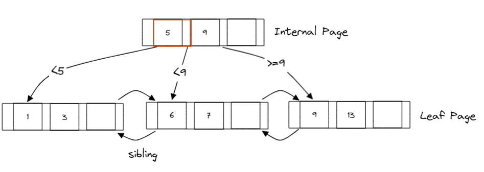
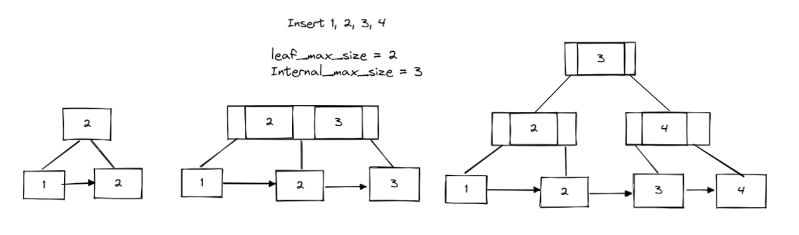
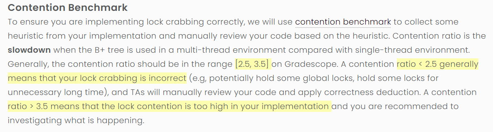
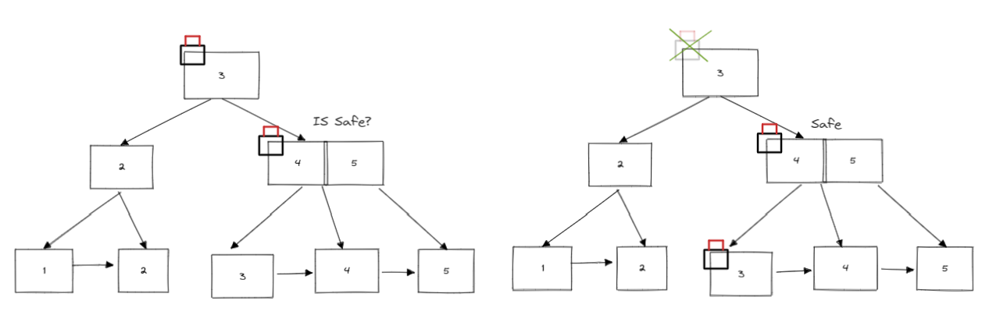
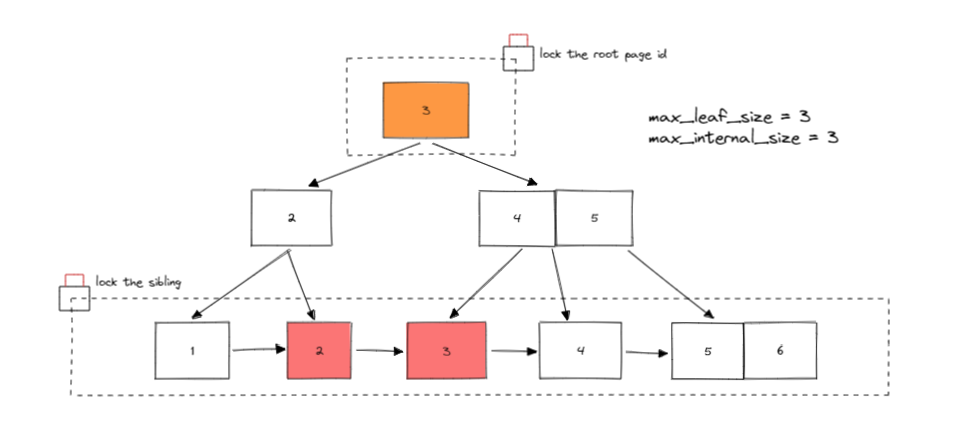
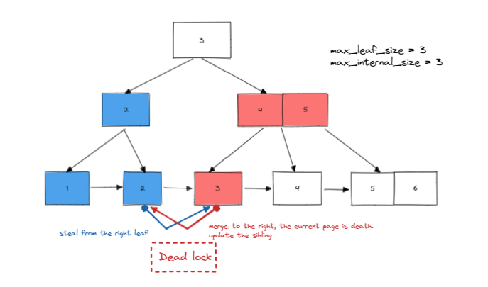
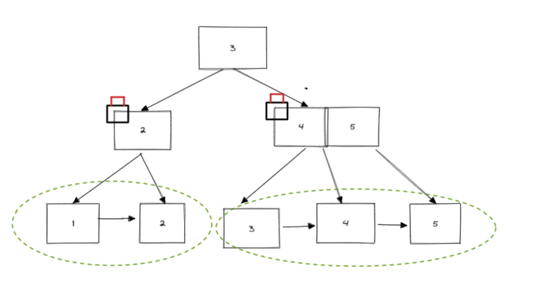
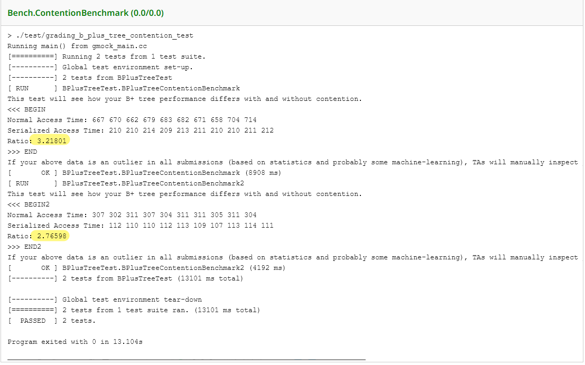
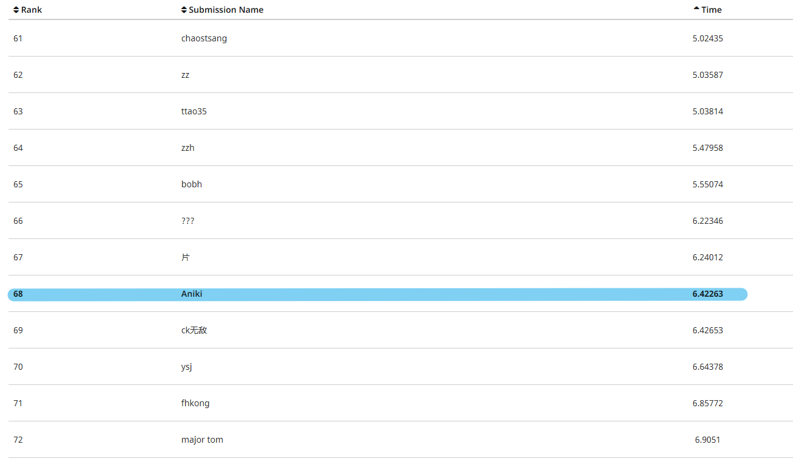

B+ Tree
Introducation
耗时半个月，终于完成了这个逆天的实验。😊写并发部分期间一度想要放弃，但好在最后还是顶了下来，一个简单的bug足足找了有一个星期。最后直接一个图一个图给bug给肯出来了，因为自己做的是22年最新的，不太清楚这个实验之前是什么样的。我是后来才知道22年的文件给的函数很少，所以我的实现和绝大部分同学实现的不太一样，这也为我后期大换血埋下了伏笔😭。话不多说，下面开始回归正题。
这个project主要分成两个部分，第一个部分是实现b+ tree基本的CRUD。第二个部分则是实现b+ tree的并发控制。
Implement The BPlusTree
B+ Tree Structure
我们先来看一下B+ Tree的基本组成。
B+ Tree 主要由以下两种node组成，每个node是由database特定的page抽象出来的，实际实现的时候会巧妙的运用到reinterpret_cast<pointer of page type>。
- Internal Node Page
- Leaf Node Page

之前如果熟悉B Tree的话。就会立马知道B+ Tree和B Tree的一个显著的区别。B+ Tree只会把value存在叶子节点里，Internal Node只是用来帮助索引的抽象。具体的类定义可以直接参考project的框架代码中的这几个文件。
b_plus_tree_page.h
b_plus_tree_leaf_page.h
b_plus_tree_internal_page.hFlexible Arary Member
这个是一个在c和c++中常用的技巧。在类或结构体中最后一个元素声明为无长度的数组，可以让最后一个数组接受任意大小的数据(这样使用非常dangerous)。这意味着结构体或者类的大小不是一定的，大小是人为定义的。在这个project里，我们柔性数组最大的大小就是每一个page所存的最大数据总量。这里也要注意一下reinterpret_cast<>，它可以对指针指向的数据进行重新解释，我们在这里就是通过reinterpret_cast<>来进行page的具体化实现的。
auto b_tree_page = reinterpret_cast<BPlusTreePage *>(page->GetData());GetValue()
这个是最简单的实现了，只需要从Root Page开始通过Internal Page索引自上而下找到Leaf Page然后通过二分或者其他的算法查找到kv即可。
Insert()
这里要分两种情况进行讨论need splitting or don’t need splitting。
当然第一种情况是最简单的，找到对应leaf, 然后增加即可，应为插入的时候要进行比较，寻找插入位置。因为每次只是插入一个，我们其实可以使用Insert Sort降低时间复杂度。

对于split(),首先是split的条件。根据note的要求来就可以了，但是这里要注意一下, Internal Page 和 Leaf Page的区别，Internal Page比Leaf Page多了一个way的概念，我称之为出口exit, 然而节点所含的kv是num of exit - 1。所以这是一个注意的点。我在后面的所以实现中Internal Page Size都是以节点中所含kv的数量为准，并没有计算第一个kv，第一个是没有key的。 再者，是split的方向，这里一律向右split，如果父节点需要split，递归向上split。直到Root Page，我们会创建新的root。
Remove()
在remove这里逻辑稍微有点复杂，但是并不是很难，因为大的还在后面。
这里简单的说一下算法:
- 找到对应的
Leaf Page，没有对应的key返回false。 - 判断是否需要重新分布，判断要求见note，不需要返回true。
- 首先进行
steal，失败了进行merge。否则返回true。 - 删除父节点的一个exit, 判读是否需要redistribute。向上递归进行。
⚠️ 注意 ️️️⚠️
但凡是合并的部分，一律向左合并，所有的操作都只能在同父下完成。都是为了后期添加并发铺路。
Concurrent Index
这是本实验最难的地方了，需要严格利用latch阻止各种并发bug。 当然我首先想到的是直接加一把大锁, 锁住整个B+树。但是it’s meaningless。 这里贴一下实验的要求：

由实验要求可知，我们需要提高并发率。而且要在[2.5, 3.5]之间。
Latch Crabbing/coupling
“钳式规则”，故名思意，再FindLeafPage的时候，我们每次获取节点后，都需要check一下当前节点是否安全，安全就释放所有的祖父节点们的锁。

这个其实不难，照着note实现即可。注意这里要利用transaction里的page_set储存未释放的page。保险起见，建议所有未释放的锁都放在最后释放。
另外一个注意点就是，page_id是需要加锁保护的，因为page在一个transaction中是有可能发生改变的。所以在获取root_page的时候我们需要加锁保护。root_page_id释放是和root_page绑定的，所以我在bplustreepage里又额外加了一个成员变量记录它是否是root_page。
下面是真正逆天的地方。 
这是我一开始的设计。我又加里一个整个leaf层的锁。

这就是为什么我上面提到的bplustree要设计好。一开始我的设计是所有merge都向右边，这就导致我会引入双指针链表的设计。所以在修改leaf的时候，会修改前置节点。所以这里我强行加了一把大锁把整个leaf都锁了。这显然是很不合理的。不利于提高并发度。
其实每个叶子节点都是有一个各自的域的，在这个域中的操作是安全的。因此我们不需要前置节点，重新设计merge的方式，就是所以的merge都必须在域中进行。在同一个父节点下面获取前置节点很简单。Internal_Page也是同样的思路。(域是指同一个父节点下的领域)

最后讲一下我粗心导致的bug。std::copy千万不要用，它的拷贝方式并不是你想的那样，求稳还是forloop一个一个copy。我debug到死也没有想到是这里的bug。一直报deadlock，自己锁自己。(卡了整整一个星期，甚至导致我leaderboard测不出来)
⚠️ 注意点 ️️️⚠️
- 必要的时候page操作完后要设为dirty。
- 释放锁从上至下。
- 不要用
std::copy()
2023-3-5 补充
今天和群友讨论delete page的一个问题，又回想了之前没想通的问题，这次想通了。 其实delete page的那里还是有个地方很坑的。
void BPLUSTREE_TYPE::DeletePage(Page *page, page_id_t page_id, bool is_dirty, RWType rw) {
rw == RWType::READ ? page->RUnlatch() : page->WUnlatch();
// it's not atomic!!!
buffer_pool_manager_->UnpinPage(page_id, is_dirty);
buffer_pool_manager_->DeletePage(page_id);
}注意看这个函数(这里我把解锁，UnpinPage，DeletePage绑定到了一个函数里)。
我们在delete page的时候大概率会遇到 delete failing的报错, 就是当前页的pin_count不是0。这是怎么回事呢？我看了网上大部分的解释，大概都是在说，DeletePage整个过程不是atomic的，但都没有解释清楚。以至于我被误导到会有线程等待要被delete的page的锁。我思来想去，被删除的page，怎么可能会被访问到呢？删除之前，索引已经删除了呀！
正确答案是，要被删除的页正在被前一个页持有，但在它释放锁 到 Unpin的那个间隙，下一个线程执行了删除的操作。
解决办法很简单——轮询
while (page->GetPinCount() != 0) {}Banchmark and Leaderboard

